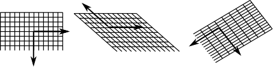

একটা surface-এর বিভিন্ন বিন্দুতে বিভিন্ন tangent plane-এর কথা শিখেছি৷ এটাও দেখেছি অংকের
ভাষায় কী করে $(x(u,v), y(u,v), z(u,v))$ আকারে প্রকাশ করা surface-এর থেকে
$(\paru x, \paru y, \paru z)$ এবং $(\parv x, \parv y, \parv z)$ এই দুই vector দিয়ে এই
plane-টা তৈরী করা যায়৷ মনে রাখা দরকার যে, একটা surface-কে একাধিকভাবে $(x(u,v), y(u,v), z(u,v))$
আকারে লেখা যায়, যেমন origin-এর centre-ওয়ালা unit sphere-কে এই
দুইভাবে লেখা যায় (আরো অনেকভাবেও যায়)--
যতক্ষণ না কোনো বিন্দুতে সেই ঝামেলাটা হচ্ছে (vector দুটো একই লাইনে হয়ে যাওয়া),
ততক্ষণ যেভাবেই লিখি না কেন tangent plane-টা সেই একই আসবে৷ সেই অর্থে tangent
plane-টার একটা বাস্তব অস্তিত্ব আছে৷ ওখানে বাস করা মানুষের অনুভূতিটা ফর্মুলার সামান্য ইতরবিশেষের উপর নির্ভর
করে না৷ কিন্তু কীভাবে ফর্মুলাটাকে লেখা হচ্ছে তার উপর ভিত্তি করে আরেকটা জিনিসও ঠিক করা
হয়, যেটা নিতান্তই বাইরে থেকে আরোপিত৷ সেটা হল সেই tangent plane-র উপর একটা coordinate system.
অর্থাৎ tangent plane-টাকে একটা গ্রাফ কাগজ বলে ভাবলে তার axis দুটো কীরকম নেওয়া হবে৷ আমরা আগেই
বলেছি origin থাকবে সেই বিন্দুটাতে৷ দুটো axis নির্বাচনের জন্য তিনটে কাজ করতে হবে, দুটো লাইন
নিতে হবে, কোন্ দিকটা positive নেব ঠিক করতে হবে, আর প্রতিটা axis বরাবর একক দৈর্ঘ্য কী
নেব সেটাও ঠিক করতে হবে৷ মনে রাখা দরকার যে, axis দুটোর পরস্পরের সঙ্গে right angle-এ থাকার
কোনো দরকার নেই৷ নীচের ছবিতে এরা সকলেই coordinate system--

এইরকম একটা coordinate system নির্বাচনের কাজটা আমরা $(x(u,v), y(u,v), z(u,v))$ আকার থেকে করে
থাকি৷ আমরা যে দুটো tangent vector পেয়েছিলাম $(\paru x, \paru y, \paru z)$ আর $(\parv x, \parv y, \parv z),$
ওদের লাইন বরাবরই আমরা axis দুটো নিই, প্রথমটা বরাবর $u$-axis, আর দ্বিতীয়টা বরাবর
$v$-axis. আর vector দুটোর তো অভিমুখ আছেই, সেটা অনুযায়ীই
positive দিকটা নিই৷ আর vector দুটোর দৈর্ঘ্যকেই নিই সেই সেই axis বরাবর একক দৈর্ঘ্য৷
মনে রাখা দরকার যে এই coordinate system গাণিতিকভাবে সুবিধাজনক হলেও, আসলে কিন্তু বাইরে থেকে আরোপিত,
tangent plane-র মত কোনো বাস্তব অনুভূতির জিনিস নয়৷ ঠিক যেমন পায়ের নীচের মাটির দিকে তাকিয়ে আমরা latitude
বা longitude বুঝতে পারি না, সেইরকম আর কি!
মন্তব্য
নীচে একটা মন্তব্য দেওয়ার জায়গা রয়েছে. দেখে মনে হবে যেন তার জন্য আগে log
in করতে হবে. যদি তাতে আপত্তি থাকে, তবে ওই "Name"-এর জায়গায় একবার
click করলেই "I'd rather post as a guest" বলে একটা option আসবে.